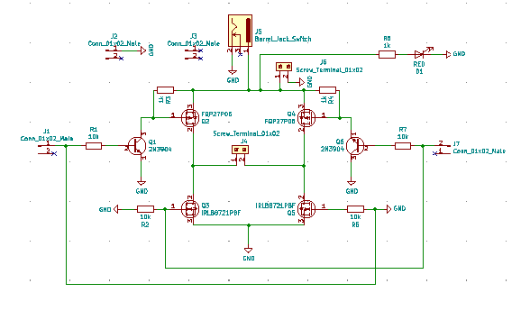
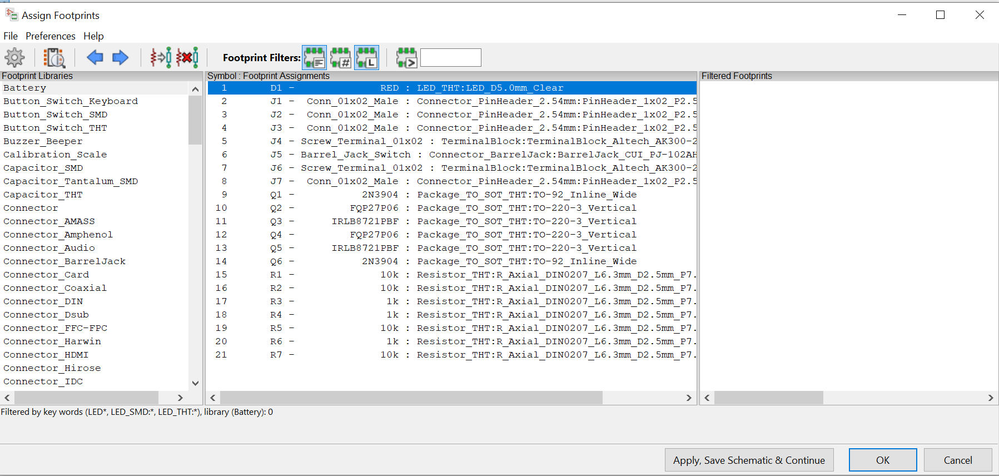
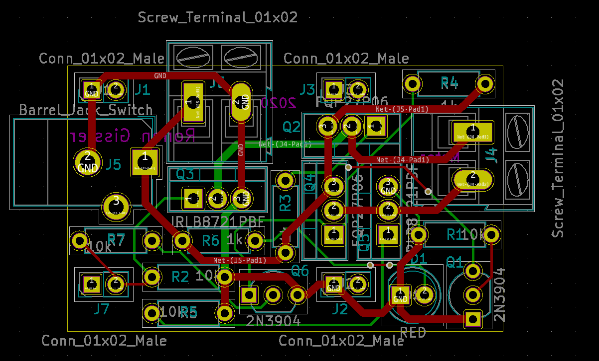
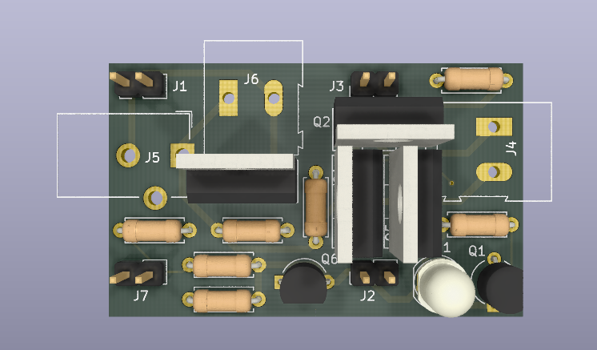

Introduction
This project was completed as part of my electronics class during the fall semester of my junior year at Tufts. The printed circuit assembly (PCA) is about 1" x 2" and can be used to control a motor running at high voltage (~12V) using low voltage (~3.3V) control signals. This application is useful when high performance (high torque and high speed) is desired from the motor and the use of a lower voltage control device such as an Arduino or Raspberry Pi is also desired. Additionally, a red LED lights up when the board is connected to power. The electronic components are mounted using the through-hole method and include the following:
- 1 Barrel Jack Connector
- 2 N-Channel MOSFETs
- 2 P-Channel MOSFETs
- 2 BJTs
- 1 Red LED
- 2 Screw Terminals (1x2)
- 4 Pin Headers (1x2)
- 3 1K Ohm Resistors
- 4 10K Ohm Resistors

Final Motor Driver PCB (left) and PCA (right)
Design Process
The process used to design the voltage regulator PCB was also used to design the motor driver PCB. The circuit was first assembled on a breadboard and tested. Then, the breadboard prototype was translated to the design of a PCB using KiCAD. The design of the PCB on KiCAD can be broken down into three steps: drawing a schematic to illustrate the functions of the circuit, assigning footprints to components in the schematic to describe their physical structure (pin hole arrangement), and then designing the structure of the PCB itself (dimensioning the board, locating components, and drawing traces).
KiCAD Schematic of Motor Driver Circuit
Footprints Applied to Motor Driver Circuit Components
PCB Layout of Motor Driver
3D View of PCB Layout of Motor Driver
Construction
Again, the process used to construct the voltage regulator PCA was also used to construct the motor driver PCA. After completing the PCB design, I sent the design to OSH Park, who then returned three copies of the PCB a few weeks later. Being particularly careful to avoid soldering together traces on the board (the motor driver PCB was more compact than the voltage regulator PCB), I soldered on each of the components to the PCB. I trimmed off the excess pin length on the components and the PCA was ready to go!